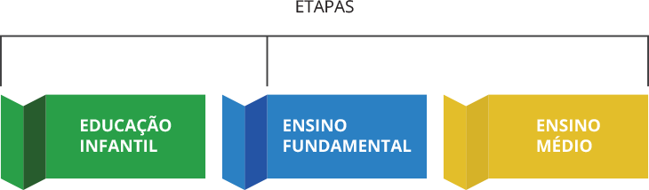

Unidade 1
Afinal, o que é a BNCC e como ela orienta a educação básica?
Na aula anterior você conheceu a estrutura da Base Nacional Comum Curricular e como se aplicam os princípios de Educação Integral e Progressão na Aprendizagem. Vimos também os conceitos de Competências e Habilidades, entendemos como eles estão associados, bem como analisamos as Competências Gerais expressas na Base. Agora, conheceremos a proposta da BNCC para cada uma das etapas da Educação Básica.
BNCC para cada etapa escolar
A BNCC está estruturada de maneira a especificar as competências que devem ser desenvolvidas ao longo de cada etapa da escolaridade da Educação Básica.

Vamos entender como cada etapa está estruturada e quais são as suas propostas!
A BNCC para a Educação Infantil
Vamos ver a seguir o que é a BNCC, como ela está estruturada e os princípios que norteiam este documento:
Em resumo, para educar e cuidar de crianças a BNCC orienta o trabalho em termos de:
Conviver
Brincar
Participar
Explorar

Expressar
Conhecer-ser
Campos de Experiências:
O eu, o outro, e o nós
Corpo, gestos e movimentos
Traços, sons, cores e formas
Escuta, fala, pensamentos e imaginação
Espaços, tempos, quantidades, relações e transformações
Progressão por faixa etária:
Bebês
(de 0 a 1 ano e 6 meses)
Crianças Muito Pequenas
(de 1 ano e 7 meses a 3 anos e 11 meses)
Crianças Pequenas
(de 4 anos a 5 anos e 11 meses)
Separamos no exemplo abaixo um único Objetivo de Aprendizagem e Desenvolvimento para que você possa observar essa progressão de uma faixa etária para outra:
CAMPO DE EXPERIÊNCIA: “ESPAÇOS, TEMPOS, QUANTIDADES, RELAÇÕES E TRANSFORMAÇÕES”
Ao observar este Campo de Experiência, é possível perceber que bebês, crianças bem pequenas e crianças pequenas exercerão atividades semelhantes, mas de forma contínua e progressiva. E, nessas atividades as crianças sempre serão estimuladas a brincar e interagir, garantindo-lhes os Direitos, pois em cada brincadeira e convívio os Campos de Experiências estarão exercitados.
Para bebês, po–r exemplo, além de cuidar de crianças tão pequenas, ou seja, prover cuidados de higiene e atenção carinhosa, também é preciso garantir os Direitos, como o de conviver e brincar, o que depende do convívio com outras crianças, com quem brincarão, se comunicarão e realizarão atividades coletivas de desenvolvimento integral e de aprendizagem.
A BNCC para o Ensino Fundamental
Na passagem para o Ensino Fundamental, os Campos de Experiência da Educação Infantil darão lugar às Áreas de Conhecimento. Assim, uma criança que saiba desenhar formas, denominar materiais como metais ou descrever relações familiares, estará mais preparada para a alfabetização da nova etapa, garantindo assim a Progressão.
Veja a seguir como a estrutura para o Ensino Fundamental foi organizada na BNCC:
Como vimos no vídeo, a passagem da Educação Infantil ao Ensino Fundamental se estabelece de forma relativamente contínua pois, usualmente, em ambas as etapas as mesmas professoras ou professores conduzirão todos os Componentes.
Também foi possível perceber que cada Área de Conhecimento tem seu conjunto de competências específicas e cada Componente, como Arte, Ciência, Matemática ou Educação Física, também tem seu conjunto de competências próprias. Vale lembrar que essas competências específicas estão em linha com a realização das competências gerais da BNCC.
A variedade de Componentes e de Habilidades, deve ser tomada com muita abrangência, como elementos para um “multiletramento”, ainda mais vantajoso se alguns componentes forem implicitamente combinados, tais como Arte e Geometria, ou Língua Portuguesa e Ciências da Natureza. Ouça a seguir sobre a importância de explorar o multiletramento:

Um outro exemplo de multiletramento, utilizando a relação entre Português e Geometria, poderia ser um exercício de denominação das formas geométricas de janelas e portas, rodas e embalagens, móveis e utensílios, quadras e equipamentos esportivos. E, este exercício pode crescer em complexidade em anos subsequentes, por exemplo, o objetivo EF03LP09 propõe “Ler e reconhecer, com autonomia, textos injuntivos instrucionais (receitas, instruções de montagem, etc.)...”; no ano seguinte, EF04LP09 propõe ‘Ler e reconhecer, com autonomia, boletos, faturas e carnês, dentre outros campos”.
A BNCC para o Ensino Médio
A Educação Integral e a Progressão na aprendizagem precisam ser cuidadosamente pensadas, quando se passa da fase final do Ensino Fundamental para o Ensino Médio. No vídeo a seguir vamos entender o porquê devemos ter este cuidado:
Foi possível perceber no vídeo como a estrutura para o Ensino Médio e sua distribuição no tempo são bastante diferentes das Etapas da Educação Básica. O que rege o Ensino Médio, além do que houver na B––NCC, serão os Itinerários Formativos, quatro deles dando aprofundamento a cada uma das Áreas e um quinto Itinerário voltado a Formação Técnica e Profissional.
O itinerário profissional não tem sua condução detalhada, mas se pode inferir que a partir da preferência pessoal ou opção universitária do estudante, ele se concentrará em um dos quatro Itinerários de aprofundamento, ou optará pelo Itinerário de Formação Técnica e Profissional. Certamente, falta maior definição de como por isso em prática, sendo necessário que escolas e sistemas escolares saibam conceber alternativas, pois a falta de especificação deste itinerário dá liberdade mais do que orientação. Ouça no podcast a seguir sobre esse tema:
Observações conclusivas
Com uma apresentação tão sintética da BNCC pode-se ficar com a impressão equivocada de uma facilidade para a implementação nas quatro etapas da Educação Básica.
Entretanto, colocar em prática suas orientações em cada uma das Etapas será trabalhoso, e a articulação entre essas Etapas será ainda mais desafiador. Vamos ver esse desafio a seguir:
Por isso oferecemos este curso de Especialização, em que se trabalha cada Etapa, se discute a importância da Aprendizagem Ativa para dar conta da proposta da BNCC e se procura dar essa visão de conjunto neste primeiro momento do curso.
 Atividade para envio
Atividade para envio

Como exercício conclusivo desta primeira Unidade, elabore uma redação de cerca de meia página, dois a três parágrafos, sintetizando sua apreciação da BNCC, dos desafios que ela representa e seu ponto de vista sobre quanto tempo será preciso para sua implementação em escala nacional. Complemente também sobre que aspectos lhe parecem os mais questionáveis que deverão ser avaliados e modificados nos próximos anos.